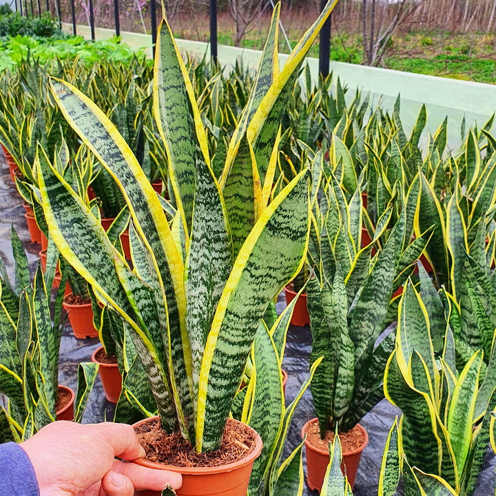

Ficha Detallada de la Planta
Información técnica, cuidados específicos y requerimientos de la variedad seleccionada.

Sansevieria (Costilla de Adán)
Sansevieria trifasciata
$3.500,00| Especificación | Valor |
|---|---|
| Categoría | Interior |
| Luz | Media sombra / Sombra |
| Apta Mascotas | No |
| Stock Disponible | 10 unidades |
Bloque de Cuidados particulares:
Riego bajo. Es una planta sumamente resistente purificadora de aire. Se recomienda regar únicamente cuando la tierra o el sustrato se encuentre completamente seco, evitando encharcamientos.
⬅️ Volver al Catálogo